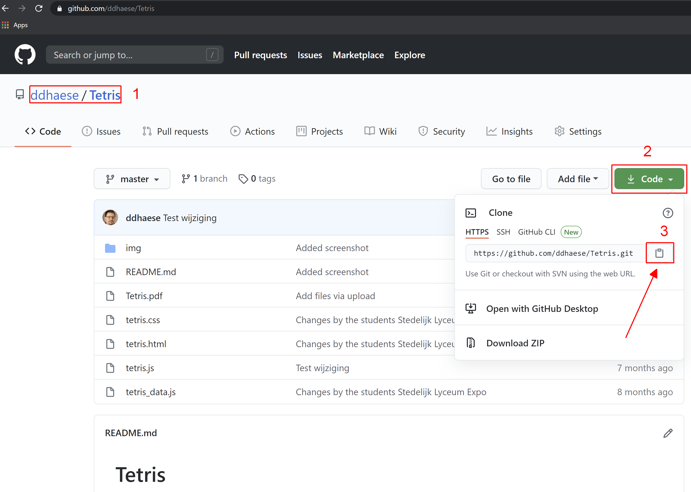

F Git
Git is een populair maar spijtig genoeg niet al te gebruiksvriendelijk versiebeheersysteem en tool om het werken in team-verband te stimuleren. In combinatie met github komt het hierop neer:
Figuur F.1: De voornaamste (tijdelijke) opslag plaatsen zoals gedefinieerd door het git versiebeheersysteem met de belangrijkste acties die uitgevoerd kunnen en die te maken hebben met het verplaatsen van data van de ene naar de andere (tijdelijke) opslag. Typisch zal de remote master GitHub zijn.
Je kan git vanuit de opdracht-prompt aansturen of vanuit een gebruikersinterface (UI), zie bijv. deze link hiervoor. Git is ook ingebakken in RStudio, dus een extra UI is in feite niet nodig. De voorbeelden hieronder zijn voor de opdracht-prompt. Van daaruit is het gewoonlijk maar een kleine stap om in een UI de gelijkaardige commando’s terug te vinden. Denk eraan dat de folder waarin je de opdrachten uitvoert moet overeenkomen met de werk-folder.
- Controle installatie
> git --version git version 2.28.0.windows.1
- Authenticatie
> git config --global user.name "usernamehere"
> git config --global user.email "email@provider.com" user.name=usernamehere user.email=email@provider.com credential.helper=store
- Van bestaande lokale folder, al dan niet met bestanden in, een lokale repository maken die je misschien later nog naar een remote repo kunt opladen.
> cd de_bestaande_lokale_folder
> git init
> git add .
> git status # Controle
> git commit -m "Eerste commit" Initialized empty Git repository in de_bestaande_lokale_folder/.git/ On branch master No commits yet Changes to be committed: (use "git rm --cached..." to unstage) new file: tmp.txt [master (root-commit) 845dafd] Eerste commit 1 file changed, 1 insertion(+) create mode 100644 tmp.txt
- Van een GitHub remote repository een lokale repository maken met lokale werk-folder. Eerst ga je naar GitHub, zoek je de repository en kopieer je de bijhorende link:

en daarna geef je de volgende opdrachten in (vervang de repo naam). Let erop dat de remote repo als subfolder wordt aangemaakt van de folder waarin je de opdracht geeft!:
> git clone https://github.com/ddhaese/Tetris.git
> cd tetris
> git remote -v Cloning into 'Tetris'... remote: Enumerating objects: 18, done. remote: Counting objects: 100% (18/18), done. remote: Compressing objects: 100% (16/16), done. remote: Total 30 (delta 4), reused 16 (delta 2), pack-reused 12 Unpacking objects: 100% (30/30), 1.13 MiB | 1.78 MiB/s, done. origin https://github.com/ddhaese/Tetris.git (fetch) origin https://github.com/ddhaese/Tetris.git (push)
- Een bestaande lokale repo koppelen aan een remote GitHub repo
> git remote add origin remote_repository_URL - Wijzigingen doorvoeren, eerst naar lokale repo, dan naar remote repo. Nadat de wijzigingen zijn aangebracht lokaal:.
> git status
> git add tmp.txt
> git status
> git commit -m "wijziging"
> git push -u origin master On branch master Changes not staged for commit: (use "git add..." to update what will be committed) (use "git restore ..." to discard changes in working directory) modified: tmp.txt no changes added to commit (use "git add" and/or "git commit -a") On branch master Changes not staged for commit: (use "git add ..." to update what will be committed) (use "git restore ..." to discard changes in working directory) modified: tmp.txt no changes added to commit (use "git add" and/or "git commit -a") [master c17bbe1] wijziging 1 file changed, 1 insertion(+), 1 deletion(-) Enumerating objects: 5, done. Counting objects: 100% (5/5), done. Delta compression using up to 16 threads Compressing objects: 100% (3/3), done. Writing objects: 100% (3/3), 303 bytes | 303.00 KiB/s, done. Total 3 (delta 2), reused 0 (delta 0), pack-reused 0 remote: Resolving deltas: 100% (2/2), completed with 2 local objects. To remote_repository_URL cc654bf..ee026e2 master -> master Branch 'master' set up to track remote branch 'master' from 'origin'.
Voor andere opdrachten verwijs ik naar Udacity’s Version Control with Git.